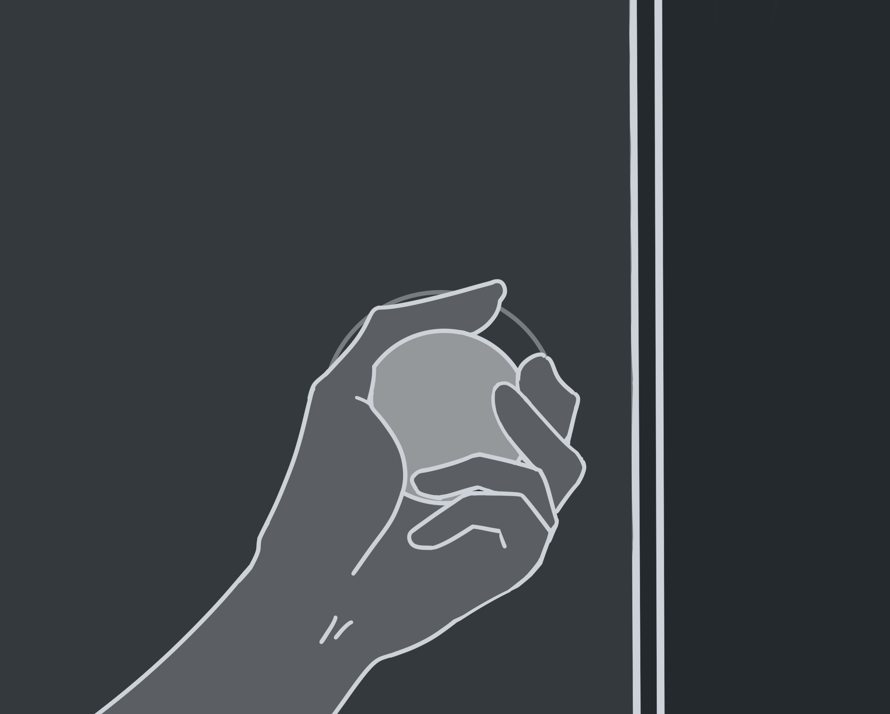
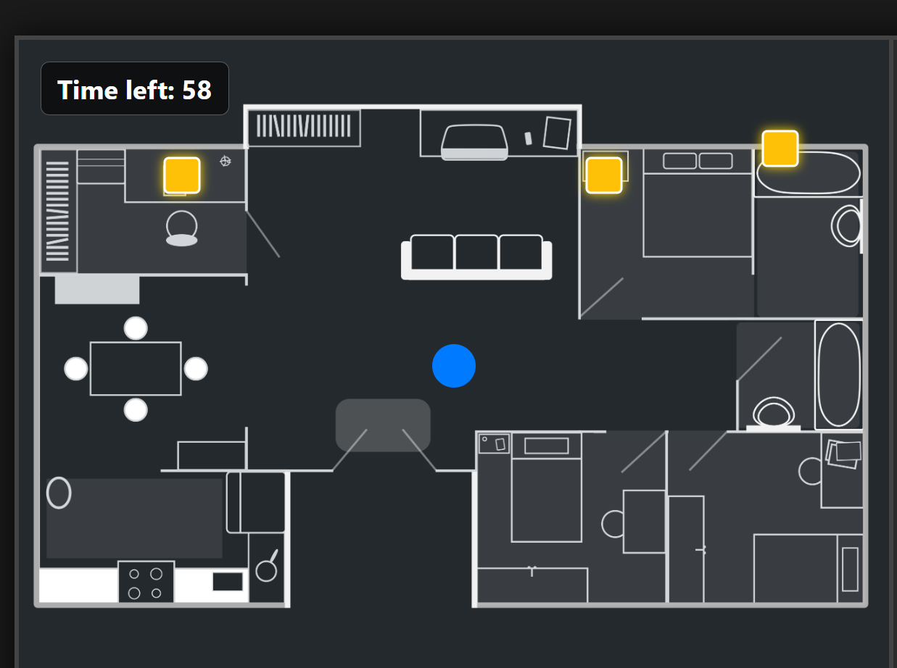
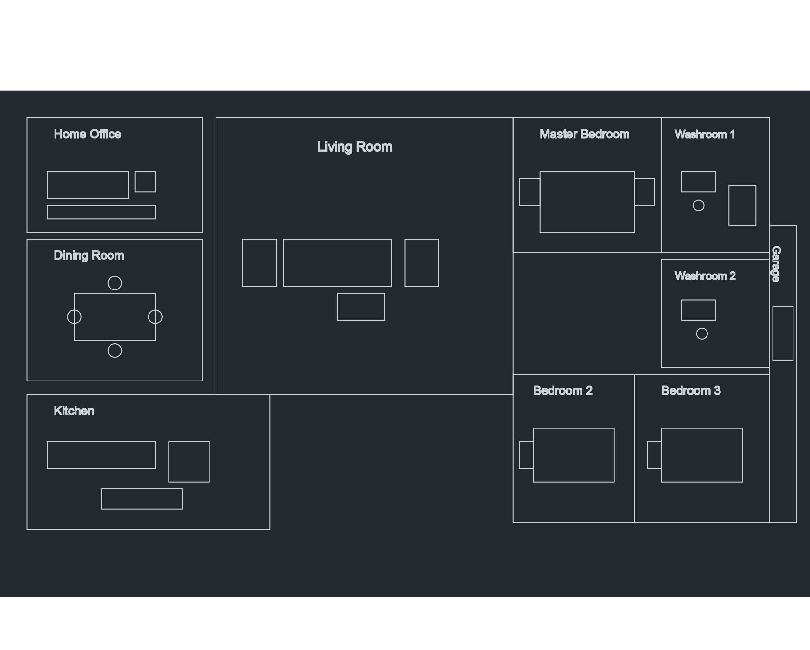
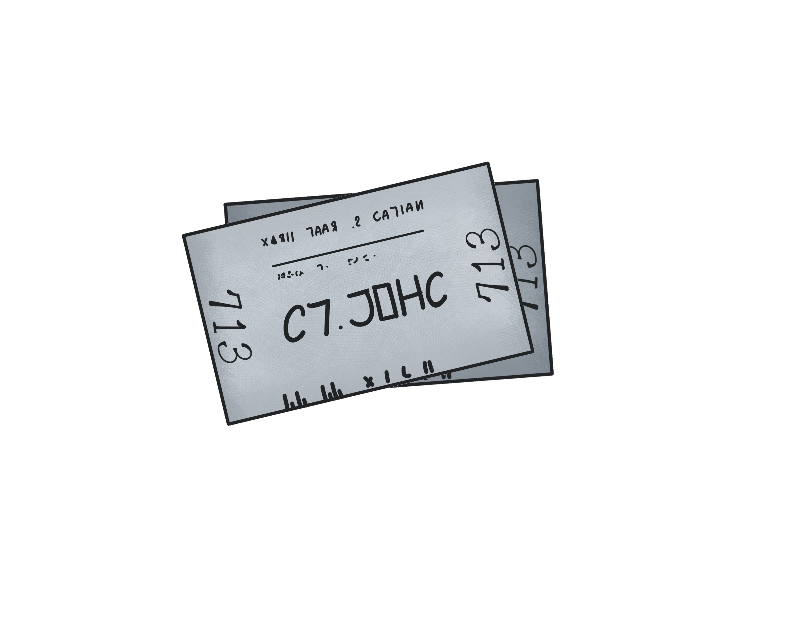
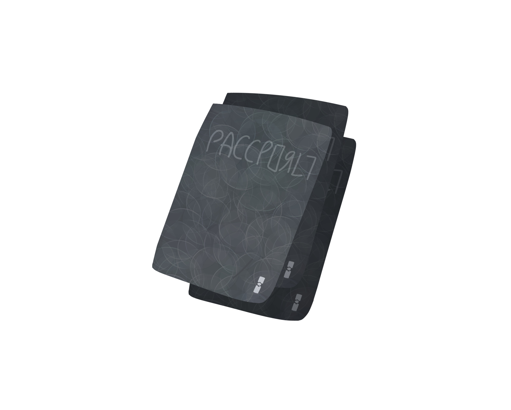
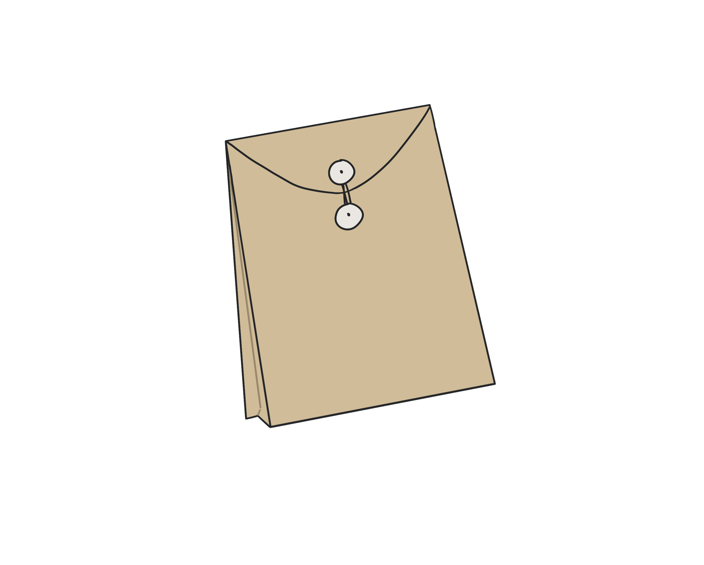
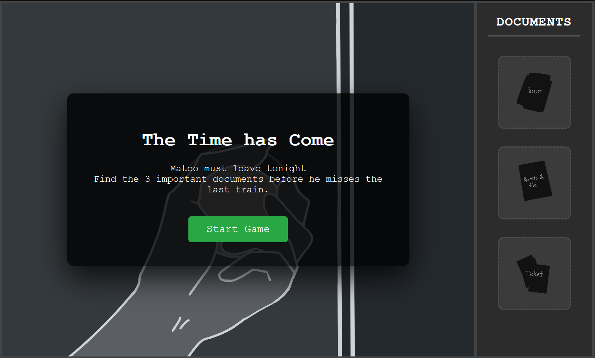
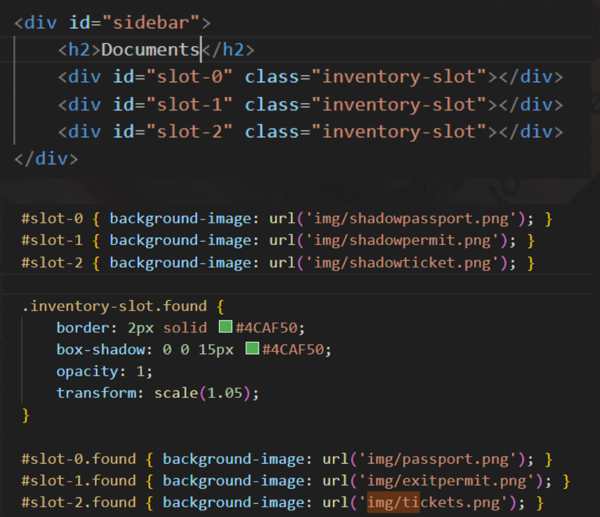
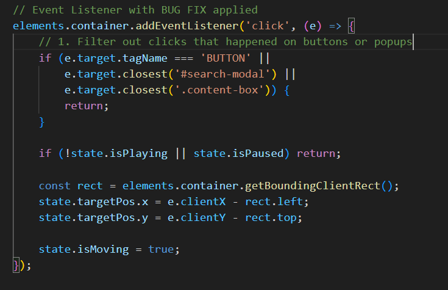
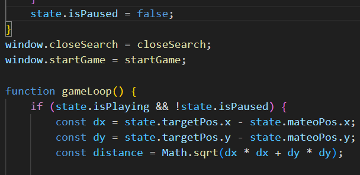

Digital Artifact 2 — Jiayin
Before the Getaway
This artifact places the user inside Mateo’s perspective as he prepares to escape his country. It takes the form of an interactive game where users must search for important documents within his home.


01
Overview
This artifact places the user inside Mateo’s perspective as he prepares to escape his country. It takes the form of an interactive game where users must search for important documents within his home.
This experience requires active participation as the user must search for Mateo’s documents.
02
Intent
The goal of this digital artifact was to simulate the urgency and pressure of preparing to escape. By turning the experience into a search-based game, users are placed in Mateo’s position where every action is time sensitive and tied to survival.
So, rather than simply telling the story, the interaction forces users to experience the stress, uncertainty, and decision making involved in escaping one’s country.
03
Process
The concept was inspired by puzzle and hidden object games where users search for items within a space and set time. Using p5.js I was able to create the web game as I had coded in an invisible timer and score recorder in it. This allowed me to build a more complex game with more ease where users control a point representing Mateo and search for documents hidden across different rooms.
To support the narrative, visual elements like a floor plan and items to gather like passports, tickets, and permits were integrated into the experience. All these elements were designed by me personally and went through an iterative process to reach the outcome.
To create the sense of urgency, the interaction was structured around a time-based system where:
- Users must locate all require documents with a limited time
- Feedback is given as items are found or missed
- The experience progresses towards a clear success or failure outcome
All these elements combined created a system where users felt more immersed with the digital experience. After completing or failing the task users are then provided with two outcomes where:
- Success = Mateo escapes and is directed to the next part of the narrative
- Failure = Mateo is stopped and misses his chance and must retry

p5.js game development

Floor plan and visual elements

Game outcomes and feedback

Game outcomes and feedback

Game outcomes and feedback

Game outcomes and feedback

Game outcomes and feedback

Game outcomes and feedback

Game outcomes and feedback
04
Challenges
A major challenge in this artifact was balancing gameplay and user experience where there would be too many pop-up messages which interrupted the flow, and too little feedback which made the objective unclear. Adding in feedback was easy, however, user testing suggested that too many repeated pop ups were frustrating. But removing them greatly reduced the tension. So, it become a balancing act to have enough pop ups for feedbacks and tension but not having too much that it frustrated user’s flow.
Another challenge was the system behaviour where bugs caused pop ups to trigger incorrectly, or the time paused during interaction which reduced the difficulty. To resolve this:
- The timer was kept running even when pop-ups appeared
- Player movement was temporarily paused instead
- UI elements were refined to improve clarity

Gameplay balancing challenges in the code

Fixing Pop Up Window Issues

Fixing Pop Up Window Issues 2
05
Reflection
This artifact demonstrates how interaction design can create an emotional tension through systems instead of just visuals alone.
By combing movement, time pressure, and out-come based feedback, the experience allowed users to feel the urgency of Mateo’s situation rather than just observing it.